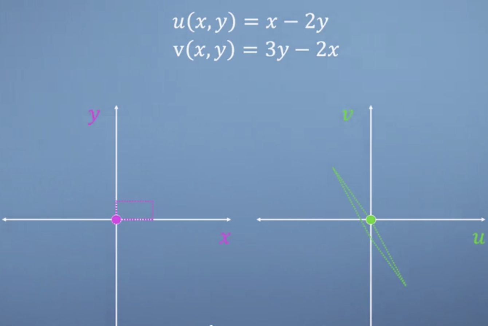
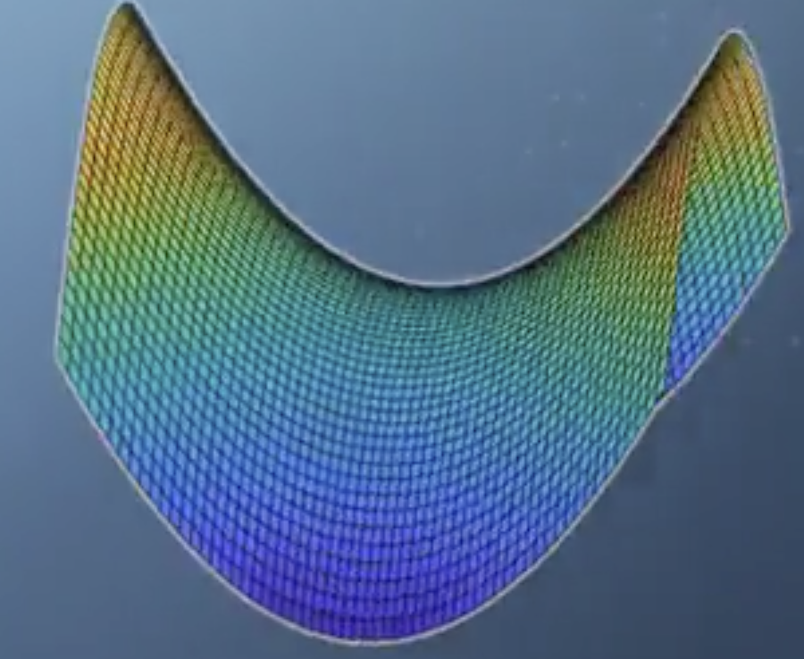

学习目标
1.学习将微积分应用到多变量的情况
2.掌握向量、矩阵在多元微积分中的作用
3.Jacobian方法在二元问题中的应用
多元的含义
记得我们上节课说到”变量这个概念是context-dependent 的”，意思就是说：如果在一个函数中出现多个符号，哪些是variable，哪些不是，那个是function，这取决于你要研究的对象是什么，而不是有固定模式帮助我们认定函数、变量、常量等待。这些概念都是相对的。
所谓多变量是指这样一种情况：我们有一个函数表达式 $f(x,y,z)$, 这个表达式的值依赖于$x,y,z$ ，意思是说逻辑上是先有了$x,y,z$的取值，我们才能确定$f(x,y,z)$的值，因此我们称$f(x,y,z)$ 是自变量$x,y,z$ 的函数。
如果一个函数的值取决于多个变量共同的取值，我们称这个函数是一个多元函数（多变量函数）
我们应该具体问题具体分析: variables, constants, context
多元函数求导
偏导数（parietal derivative）
是指多元函数对某一个单独变量的导数。单独地衡量该变量对函数值变化的贡献，这时候其他变量被看作常数。
存在一个函数$f(x,y,z)$，其对$x,y,z$的偏导数分别记为：$\frac{\partial f}{\partial x}, \frac{\partial f}{\partial y},\frac{\partial f}{\partial z}$.
全导数（total derivative）
存在一个函数$f(x,y,z)$， 而且$x=x(t),y=y(t),z=z(t)$ . 也就是说除了三个自变量 $x,y,z$之外还有一个变量$t$, 它与之前三个自变量都有关系。那么如此看来，$f$ 直接depend on $x,y,z$；但是间接地depend on $t$. 那么所谓的全导数是指：$\frac{d f}{dt}$.
在求解全导数的过程中和我们在求偏导数的时候有一点不一样：在不能将其他变量看作是常数而忽略, 计算公式如下，
$$
\frac{d f(\color{blue}{x},\color{green}{y},\color{purple}{z})}{d t}=\frac{\partial f}{\partial \color{blue}{x}}\frac{d \color{blue}{x}}{dt} + \frac{\partial f}{\partial \color{green}{y}} \frac{d\color{green}{y}}{dt}+\frac{\partial f}{\partial \color{purple}{z}} \frac{d\color{purple}{z}}{dt}
$$
Example:
TO_DO…
Vector of derivatives
一.多元实值函数的Jacobian
Jacobian 本质上一个是多变量的函数，其表现形式往往为一个向量（更泛化地说，是一个 matrix）。
Jacobaian is just a single function of many variables
存在一个n元实值函数$f(x_1,x_2,…,x_n)$ ，$f:\mathbf{R}^n\rightarrow \mathbf{R}$，其 Jacobian 如下：
$$
\mathbf{J}_f = \begin{bmatrix}
\frac{\partial f}{\partial x_1}& \frac{\partial f}{\partial x_2} & \cdots &\frac{\partial f}{\partial x_n}
\end{bmatrix}
$$
Jacobian 写成行和列本质上是一样的，习惯上是写成行，记住：仅仅是习惯上。 但他俩都是 vector of derivates.
显而易见，这种情况下的 Jacobian 就是我们常见的多元函数的梯度。
Example：
$f(x,y,z)=x^2y+3z$
$\mathbf{J}_f=\begin{bmatrix} 2xy & x^2 & 3 \end{bmatrix}$
Jacobian 能告诉我们什么信息呢？
如果给我们一组确定的$(x,y,z)$坐标，Jacobian 代表的那个向量的方向指向了函数$f(x,y,z)$ 斜率最大的方向即函数变化最快的方向，Jacobian 向量的magnitude 代表了斜率的大小，即函数在那个确定点处变化的大小。总之，这种情况下的 Jacobian是函数$f(x,y,z)$的梯度，它衡量的函数的变化：大小和方向。二. 多元向量值函数的Jacobian
存在两个函数$u(x,y)=x-2y,v(x,y)=3y-2x$ 如下图，

我们把$u,v$ 看作一个向量的components，因此我们可以把它们各自的Jacobian 按行堆叠起来组成一个Jacobian矩阵，过程如下，
$$
\begin{align}
u(x,y) &= x-2y\\
v(x,y) &= 3y-2x\\
J_u&=
\begin{bmatrix}
\frac{\partial u}{\partial x}\ \ \frac{\partial u}{\partial y}
\end{bmatrix}\\
J_v&=
\begin{bmatrix}
\frac{\partial v}{\partial x}\ \ \frac{\partial v}{\partial y}
\end{bmatrix}\\
J &= \begin{bmatrix}
\frac{\partial u}{\partial x}\ \ \frac{\partial u}{\partial y}\\
\frac{\partial v}{\partial x}\ \ \frac{\partial v}{\partial y}
\end{bmatrix}= \begin{bmatrix} 1 & -2\\-2&3 \end{bmatrix} \\
\end{align}
$$
其中，$J_u,J_v$ 的意思是 $J(u(x,y)), J(v(x,y))$.
从上述结果可以看出，Jacobian矩阵的entries 都是常数，那是因为$u,v$ 均为$x,y$ 的线性函数，所以梯度处处都为常数。
如果细心的人会发现，如果将上面最初的$u,v$ 函数的表达式看作方程，就会得到：
$$
\begin{bmatrix}
1 & -2 \\
-2 & 3
\end{bmatrix}
\begin{bmatrix}
x\\y
\end{bmatrix}
=\begin{bmatrix}
u\\v
\end{bmatrix}
$$
此即为线性代数中最常见的线性方程的表达式：$\mathbf{A}\vec x = \vec b$
我们还发现，上面的Jacobian $\mathbf{J=A}$. 这不是偶然的，因为根据这里Jacobian的定义和线性方程的线性特性：线性变换$\mathbf{A}$ 就是 $\mathbf{J}$.
换句话说, 在u,v 都是 x,y 的线性函数的情况下， $\mathbf{J}$ 是一个从$x,y$ 空间到$u,v$ 空间的一个线性变换；且就是$\mathbf{A}$。
上面介绍了两种多元函数对应的 Jacobian，现在给出一个统一的定义：Jacobian的统一定义:
存在一个函数 $\mathbf{f}:\mathbf{R^n}\rightarrow \mathbf{R^m}$ (如果m=1，其为实值函数；如果m>1,其为向量值函数)，它的Jacobian定义为：
$$
\begin{align}
\mathbf{J_f} = \begin{bmatrix}
&\frac{\partial f_1}{\partial x_1} &\frac{\partial f_1}{\partial x_2} \dots &\frac{\partial f_1}{\partial x_n}\\
&\frac{\partial f_2}{\partial x_1} &\frac{\partial f_2}{\partial x_2}\dots &\frac{\partial f_2}{\partial x_n}\\
&\vdots &\dots &\vdots \\
&\frac{\partial f_m}{\partial x_1} &\frac{\partial f_m}{\partial x_2} \dots &\frac{\partial f_m}{\partial x_n}
\end{bmatrix}
\in \mathbf{R^{m \times n}}
\end{align}
$$
我们来分析一下这个统一定义：
- 这个定义要比上面提到的 “向量值函数的Jacobian” 的情况更加泛化，如果$\mathbf{f}$ 是线性变换，那么和上面情况一样，$\mathbf{J}$ 就是表示线性变换的那个矩阵；如果 $\mathbf{f}$ 不是线性变换，那么就不同于之前提到的情况。因此这个统一定义是有着更加泛化的意义的。
- 如果 m = 1，$f$ 的Jacobian 就是其 gradient(一个行，一个列；严格来说是转置关系。)
- 向量值函数$f$ 本质上是由m 个 实值函数组成的向量，否则是无法计算 gradient的，当然也就无法计算Jacobian. 因此，向量值函数的Jacobian计算过程就是分别计算这 m 个实值函数的gradients ,然后按行堆叠起来组成一个$m\times n$ 的矩阵即可。其中，n 是函数自变量的个数；m 是组成最后$f$ 向量值的实值函数的个数。
下面我们给出Gradient的统一定义：
存在一个实值函数 $f:\mathbf{R^{m \times n} \rightarrow \mathbf{R}}$，其自变量是一个$\in \mathbf{R^{m\times n}}$ 的矩阵，记为：$\mathbf{A}$ 函数$f$关于$\mathbf{A}$ 的gradient 为一个由偏导数组成的矩阵：
$$
\nabla_{A}f(A) \in \mathbf{R^{m \times n}} = \begin{bmatrix}
\frac{\partial f(A)}{\partial A_{11}} & \frac{\partial f(A)}{\partial A_{12}} &\dots &\frac{\partial f(A)}{\partial A_{1n}}\\
\frac{\partial f(A)}{\partial A_{21}} & \frac{\partial f(A)}{\partial A_{22}} &\dots &\frac{\partial f(A)}{\partial A_{2n}}\\
\vdots &\dots &\dots &\vdots \\
\frac{\partial f(A)}{\partial A_{m1}} & \frac{\partial f(A)}{\partial A_{m2}} & \dots & \frac{\partial f(A)}{\partial A_{mn}}
\end{bmatrix}
$$
注意：
- 函数$f$ 的 gradient 总是与其自变量矩阵$\mathbf{A}$ 同型的。
- 与 Jacobian统一定义的不同之处在于：
- gradient 一定是针对实值函数的；而 Jacobian在向量值函数上也是有定义的。
- 对实值n元函数$f:\mathbb{R^n}\rightarrow \mathbb{R}$ 而言， $\frac{\partial f}{\partial \mathbf{x}} =\mathbf{J^T}$;
- Gradient向量的每一个components 表明了该处自变量对于函数变化速度的贡献。
如果特殊情况下，$\mathbf{A}$ 仅仅是个向量 $\mathbf{x} \in \mathbf{R^n}$ 而非矩阵，即：$f: \mathbf{R^n} \rightarrow \mathbf{R}$那么:
$$
\nabla_\mathbf{x}f(\mathbf{x}) =\frac{\partial f}{\partial \mathbf{x}} = \begin{bmatrix}
\frac{\partial f}{\partial x_1}\\
\frac{\partial f}{\partial x_2}\\
\vdots\\
\frac{\partial f}{\partial x_n}
\end{bmatrix}
$$
此时 gradient 确实等于其 Jacobian, i.e. $\nabla_\mathbf{x} f(\mathbf{x}) = \mathbf{J}f$ or 等于 Jacobian的转置: $\nabla{\mathbf{x}}f(\mathbf{x})=(\mathbf{J}_f)^T$.
Jacobian 的应用
（细节可以参考这个 Jupyter book ）
海森矩阵-Hessian
多元函数的 Hession 可以看作是gradient 概念的延伸，存在一个n元实值函数 $f:\mathbf{R^n} \rightarrow \mathbf{R}$,
- Gradient 把函数对各个自变量的一阶偏导数集合起来组成一个向量$\in \mathbf{R^n}$.
- Hessian 把函数对各个自变量的二阶偏导数集合起来组成一个矩阵$\in \mathbf{R^{n\times n}}$.
$$
\text{Hessian}(f)=\mathbf{H}= \begin{bmatrix}
\frac{\partial^2 f}{\partial x_1^2} & \frac{\partial^2 f}{\partial x_1\partial x_2} & \dots &\frac{\partial^2 f}{\partial x_1\partial x_n} \\
\frac{\partial^2 f}{\partial x_2 \partial x_1} & \frac{\partial^2 f}{\partial x_2^2} & \dots &\frac{\partial^2 f}{\partial x_2\partial x_n}\\
\vdots & \dots &\dots & \vdots \\
\frac{\partial^2 f}{\partial x_n \partial x_1} & \frac{\partial^2 f}{\partial x_n \partial x_2} & \dots & \frac{\partial^2 f}{\partial x_n^2}
\end{bmatrix}
$$
PS: 当然针对一个多元实值函数来说，Hessian 也可以看作是 Jacobian的延伸，因为这种情况下的Jacobian即是gradient。
针对Hessian矩阵的分析：
- Hessian 是对称矩阵。
- 既然对称，一定可以对角化。且可以选出一组正交的eigen-vectors来对角化：$\mathbf{H=Q\Lambda Q^T}$, 其中$\mathbf{Q}$ 是正交矩阵，其每一列为$\mathbf{H}$ 的特征向量，$\Lambda$ 是由$\mathbf{H}$ 的特征值构成的对角矩阵。
优化
在一元函数中，我们有如下结论：
$$
\begin{cases}
\frac{\partial f}{\partial x}=0 , \frac{\partial^2 f}{\partial x^2}>0 \Rightarrow f_{min} \\
\frac{\partial f}{\partial x}=0 , \frac{\partial^2 f}{\partial x^2}<0 \Rightarrow f_{max}
\end{cases}
$$
在多元函数中，我们有类似结论：
$$
\begin{cases}
\mathbf{J}=\vec 0, \mathbf{H} \text{ is Positive Definite} \Rightarrow f_{min} \\
\mathbf{J}=\vec 0, \mathbf{H} \text{ is Negative Definite} \Rightarrow f_{max}
\end{cases}
$$
1. $\vec x^T \mathbf{H}\vec x >0$ for any $\vec x \ne 0$.(正定矩阵的定义)
2. 所有特征值>0
3. 所有Pivots > 0
4. 所有subdeterminants > 0
Example1:
$f(x,y)=x^2+y^ 2$, 其图像如下图
我们利用上述结论求其最小值：
Jocabian = $\begin{bmatrix}2x\\ 2y \end{bmatrix}$ ,令其gradient为0，i.e. $J=0 \Rightarrow \begin{bmatrix}0\\0\end{bmatrix}$ 点是一个critical point(因为gradient为0)。
现在求出函数$f$ 的Hessian，并判断其正定情况：
$\mathbf{H}= \begin{bmatrix}\frac{\partial^2 f}{\partial x^2} & \frac{\partial^2f}{\partial x \partial y} \\ \frac{\partial^2 f}{\partial y\partial x} & \frac{\partial^2 f}{\partial y^2} \end{bmatrix} = \begin{bmatrix}2 & 0\\ 0 & 2 \end{bmatrix}$
根据上面关于正定矩阵的充要条件，我们知道 $\mathbf{H}$ 是正定的，因此函数$f$ 在 （0，0）处取的最小值。
Example2:
$f(x,y) = x^2-y^2$，其图像如下

$J = \begin{bmatrix} 2x \\ -2y \end{bmatrix}$, 令其gradient=0 $\Rightarrow x=0,y=0$ ,所有(0,0) 是一个critical point.
$\mathbf{H} = \begin{bmatrix}2 & 0 \\0 & -2 \end{bmatrix}$, 根据Hessian正定的充要条件，$\mathbf{H}$ 既不是正定，也不是负定$\Rightarrow \mathbf{H}$ 是不定的，说明(0,0)点是函数 $f$ 的一个 saddle point $\Rightarrow$ 在某个方向是最大值，在某个方向是最小值 $\Rightarrow$ 全局来说，既非最大也非最小！
现实是艰难的
不连续性
很多跳变点
鞍点
…
待补充